Ombra
Cada versión trae sus notas: qué ha cambiado y cómo actualizar.
Una sola app gratis de Windows para toda tu sesión de VR: seguimiento de cuerpo completo para HaritoraX y trackers compatibles con SlimeVR, un chatbox de VRChat con tu música y tu frecuencia cardíaca, protección contra crashers y paneles en tu muñeca.
Ombra conecta por sí sola a SteamVR los trackers HaritoraX y los compatibles con SlimeVR, sin ninguna otra app. Construye tu cuerpo a partir de los sensores y tu visor, suaviza cada tracker y corrige la deriva mientras juegas.
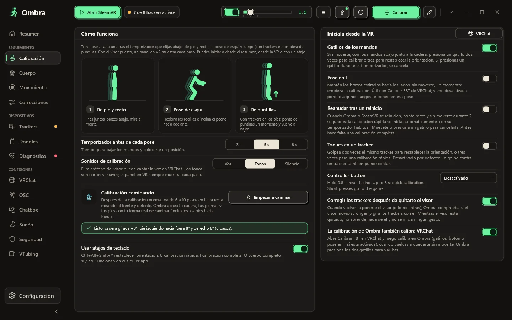
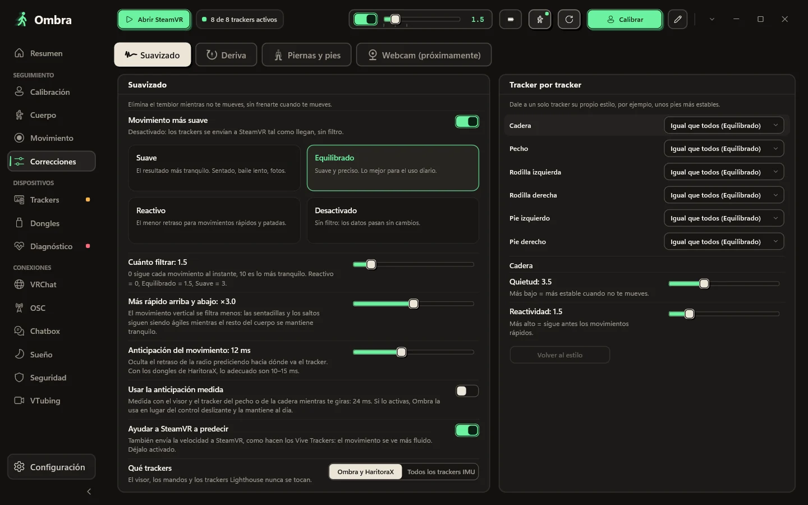
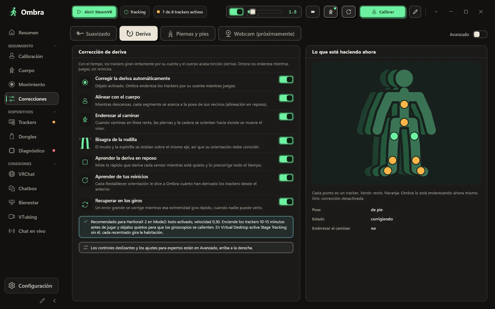
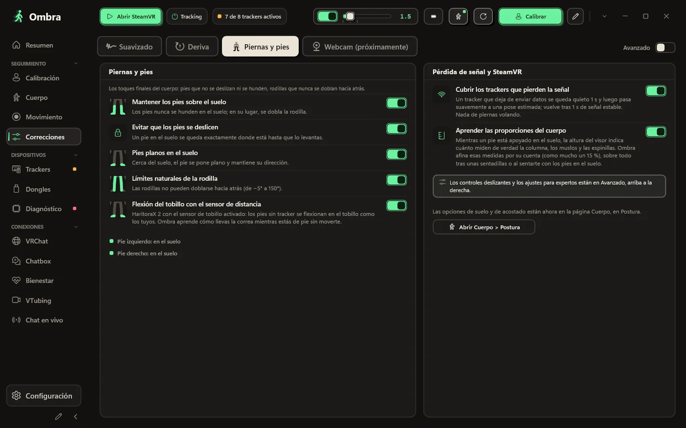
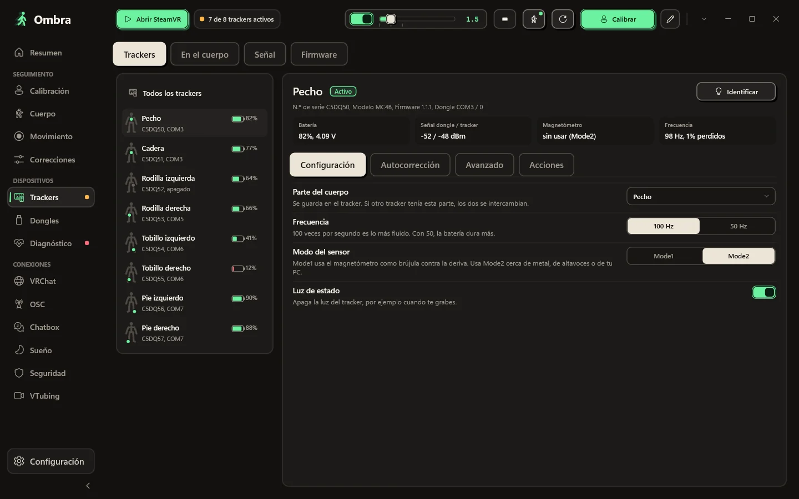
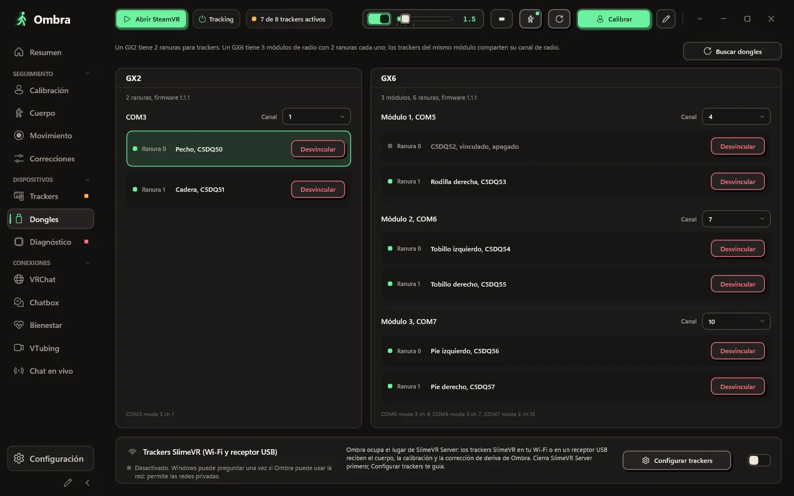
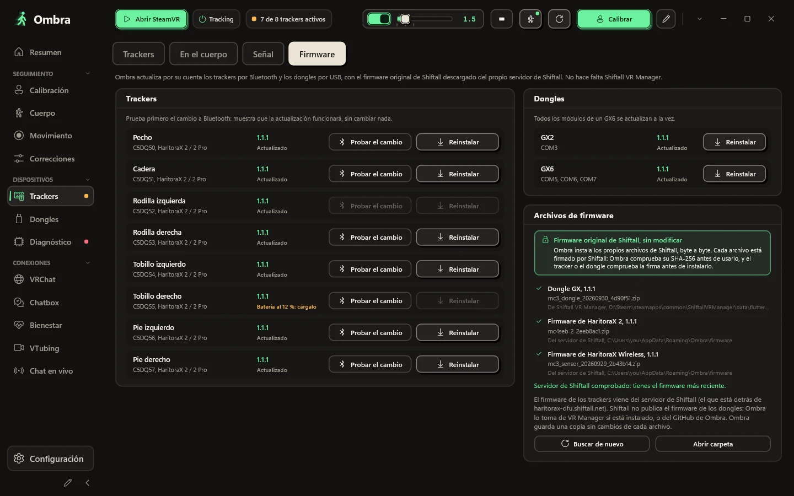
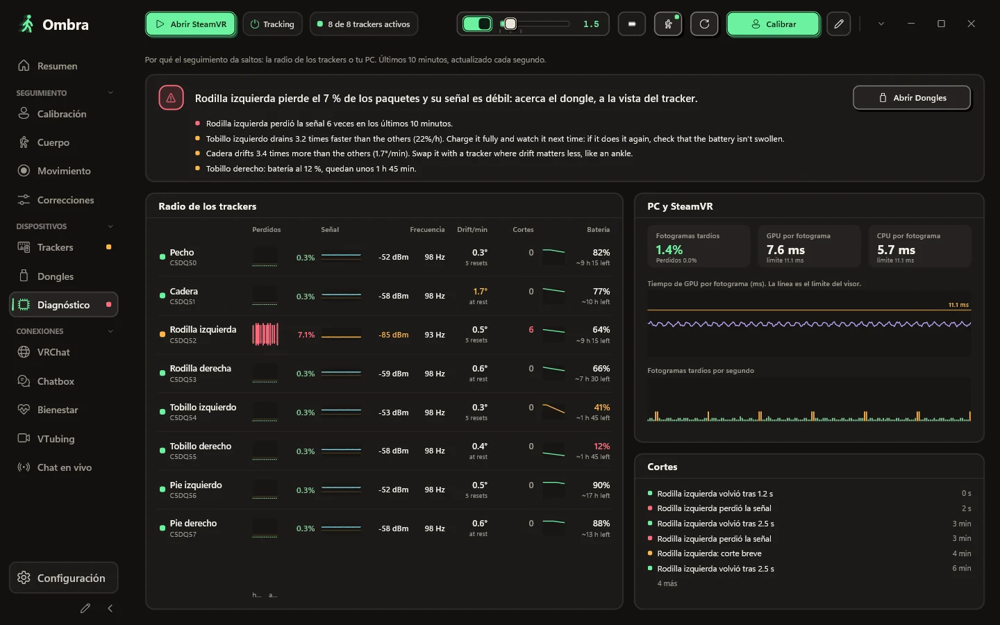
El cuerpo que Ombra construye a partir de tus sensores y tu visor, en vista 3D frontal, lateral o libre. Cada tracker muestra si tiene seguimiento, si está simulado o si se ha quedado sin señal.
Ponte recto, flexiona las rodillas en pose de esquí y luego sube de puntillas si tienes trackers en los pies. Ombra te indica qué parte del cuerpo revisar cuando algo no cuadra.
Suave, Equilibrado, Reactivo o Desactivado, o el nivel que quieras con un control deslizante. Dale a un solo tracker su propio estilo, por ejemplo, unos pies más estables.
La corrección de deriva funciona mientras juegas, y una tabla en tiempo real muestra lo que hace en cada parte del cuerpo.
Tu cuerpo sigue siendo creíble: los pies quedan por encima del suelo y no se deslizan cuando están apoyados, y las rodillas nunca se doblan hacia atrás.
Número de serie, firmware, ranura del dongle, voltaje de la batería, señal en ambos extremos, estado del magnetómetro y la frecuencia de actualización real.
Un GX2 tiene dos ranuras; un GX6 tiene tres módulos de radio con dos ranuras cada uno. Ombra muestra cada módulo, el tracker de cada ranura y su canal.
Actualiza los trackers por Bluetooth y los dongles por USB con los archivos de firmware originales de Shiftall, sin modificar.
Cuando el seguimiento da saltos, la página Diagnóstico te muestra de dónde vienen: los paquetes perdidos, la señal y la frecuencia de actualización real de cada tracker, junto a los fotogramas que perdió SteamVR.
Elige un estilo, qué muestra y en qué orden. Ombra lo mantiene dentro de la burbuja y nunca lo satura.
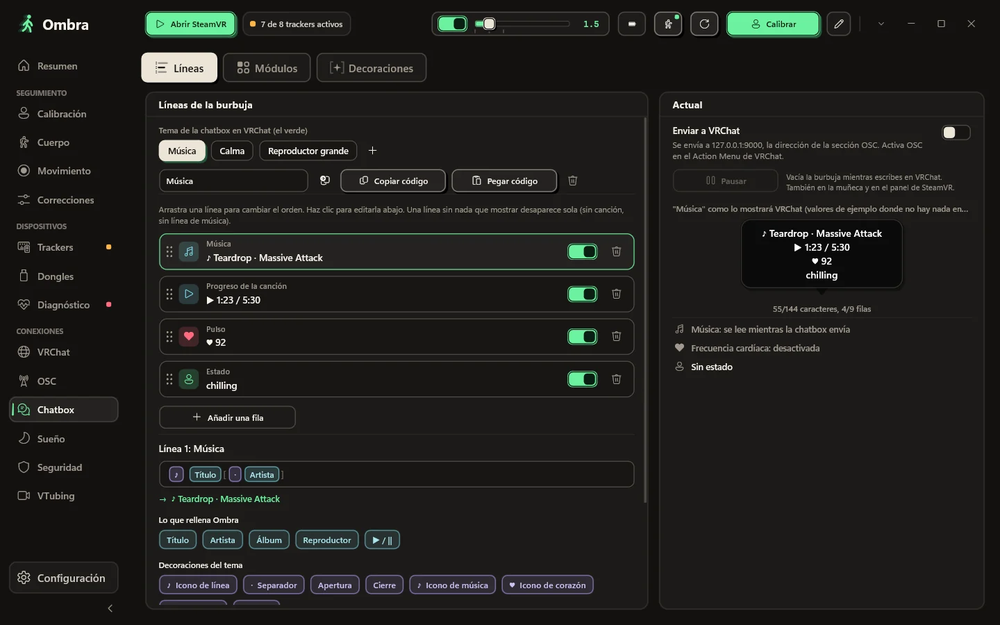
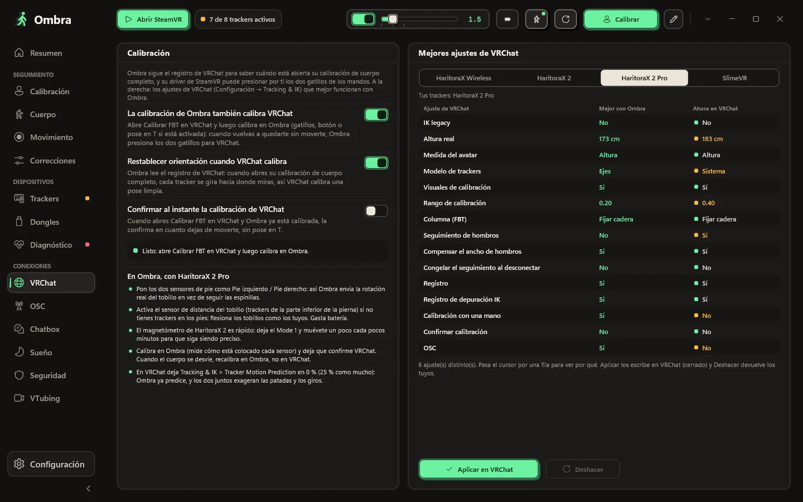
Empieza por un estilo: ocho burbujas reales de VRChat dibujadas con tus propias líneas, de lo limpio a lo kawaii. Activa y desactiva módulos, súbelos o bájalos, elige uno de los doce separadores que VRChat dibuja de verdad, o ponlo todo en una sola línea.
T7RK-1J85-6, sin servidor de por medioLa calibración de Ombra también calibra VRChat, y los ajustes de cuerpo completo que VRChat recomienda para tus trackers están a un clic, con opción de deshacer.
VRChat anota quién entra y qué avatar carga. Ombra lee ese registro en tu PC, así que tras un crash ves al posible crasher y puedes ocultar su avatar con un clic.
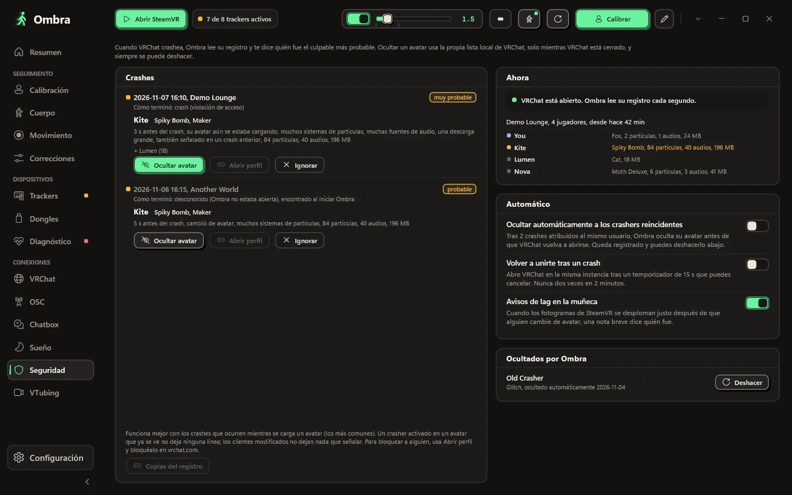
Lo que necesitas mientras juegas está en tu muñeca y en el panel de SteamVR.
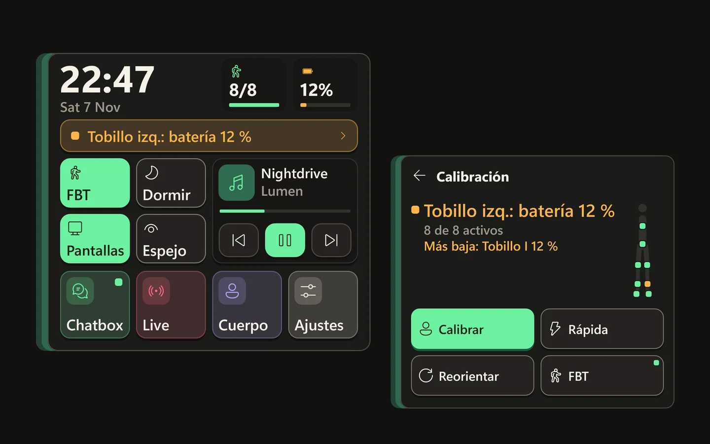
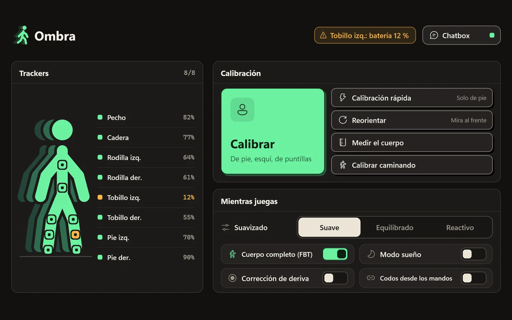
Mira tu muñeca y aparece: un reloj grande, cuántos trackers están activos y la batería más baja, el estado de la calibración, cuatro interruptores con nombre (cuerpo completo, sueño, pantallas, espejo) y tu música. Las notificaciones de tu PC también llegan ahí. Aparta la mirada y desaparece.
Cada tracker con su batería, botones grandes para calibrar y restablecer la orientación, y los interruptores que cambias mientras juegas.
Organiza la barra lateral y elige tus propios colores. Con un clic vuelves al original.
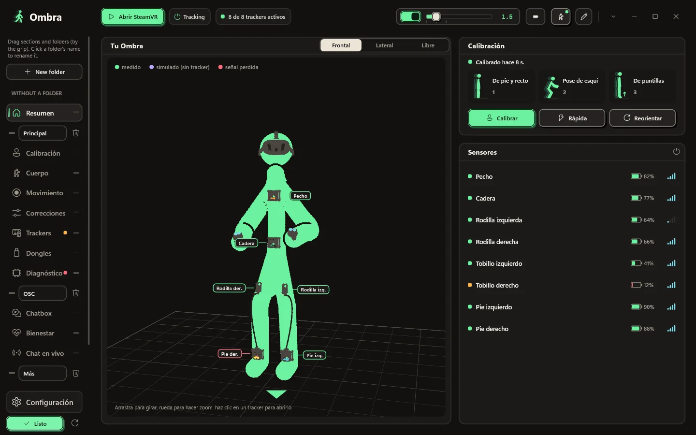
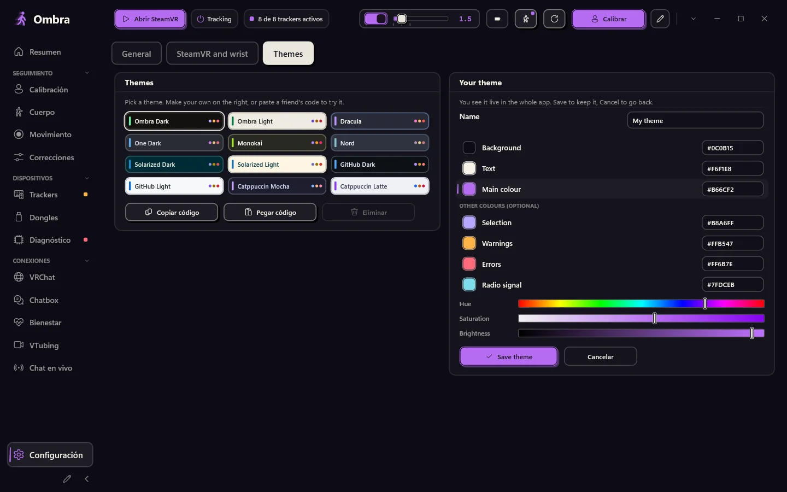
Pulsa el lápiz al final de la barra: crea carpetas, ponles nombre y arrastra secciones y carpetas enteras adonde quieras.
Configuración → Temas → Tu tema: elige un fondo, un color de texto y un color principal, con barras o códigos hexadecimales. Ombra calcula el resto. Lo ves en directo en toda la app y en los paneles en VR; guárdalo o cancela para volver atrás.
Sin navegador dentro, con 12 temas de color y el tuyo. SteamVR inicia Ombra, que espera en la bandeja con un panel para tus trackers.
Los botones que más usas, en el orden que quieras.
Ombra te avisa cuando sale una versión nueva y nunca se actualiza mientras SteamVR está abierto.
Opcional: tras un reinicio, Ombra se calibra automáticamente en cuanto dejas de moverte.
Aquí tienes todo lo que Ombra hace con internet, y todo lo que no hace.
Ombra cambia a menudo. Aquí tienes lo que trae la última versión, sacado de sus notas, y lo que salió antes.
Ombra
Cada versión trae sus notas: qué ha cambiado y cómo actualizar.
Windows 10 u 11 (64 bits) y SteamVR. HaritoraX 2, 2 Pro o Wireless con un dongle GX, o trackers compatibles con SlimeVR.
Un solo archivo, Ombra-Setup.exe. El botón de abajo siempre descarga la última versión.
Solo una app puede usar los dongles a la vez.
No necesita permisos de administrador y registra el driver de SteamVR. Si Windows te muestra un aviso, mira las preguntas de abajo.
Enciende tus trackers, inicia SteamVR, póntelos y presiona Calibrar.
Última versión. Todas las versiones y cambios
Cada versión se analiza con Microsoft Defender y se sube a VirusTotal: ver el informe.
Si falta algo, pregunta en GitHub.
No. Ombra lee los dongles por su cuenta, vincula los trackers y actualiza el firmware con los archivos originales de Shiftall. Mantén cerradas las otras apps de trackers mientras Ombra esté abierta.
HaritoraX 2, 2 Pro y Wireless con dongles GX2 o GX6, y trackers compatibles con SlimeVR por Wi-Fi o con un receptor USB, por ejemplo Butterfly y Smol Slime. Los trackers de estaciones base como los Vive trackers se pueden alinear con unas Quest, y Ombra también puede suavizar otros trackers IMU que ya estén en SteamVR. HaritoraX 1 (con cables) no es compatible.
Sí. Desde tu PC, a través de SteamVR, por cable o de forma inalámbrica. Con VRChat funcionando en el propio Quest, Ombra envía tu cuerpo por OSC desde tu PC, sin SteamVR.
El instalador todavía no tiene firma de código, así que SmartScreen no lo reconoce. Haz clic en Más información y luego en Ejecutar de todas formas. Ombra se instala en tu carpeta de usuario y no necesita permisos de administrador.
El instalador configura el driver propio de Ombra para SteamVR. Tus trackers aparecen en SteamVR con sus funciones ya asignadas (cadera, pecho, rodillas, pies, codos), y SteamVR abre Ombra por ti.
No. Los dispositivos Lighthouse, los visores y los mandos nunca se modifican. El driver solo crea los trackers virtuales de Ombra y, solo si lo activas, suaviza otros trackers IMU.
No. Mucha gente usa Ombra solo para el chatbox, las herramientas de VRChat y el cuerpo sacado del visor. Elige Sin trackers en la instalación y Ombra nunca te pedirá un dongle.
Sí. Ejecuta Ombra.exe --demo para tener ocho trackers de demostración en un GX2 y un GX6. La demo nunca toca los puertos COM, el Bluetooth, SteamVR ni tu configuración.
La app y esta web están en inglés, italiano, alemán, francés, español, portugués de Brasil, japonés, coreano, chino simplificado y ruso. Ombra usa el idioma de tu Windows y puedes cambiarlo en Configuración.
No. Ombra es un proyecto independiente, gratis para descargar y usar. El código fuente no es público; puedes proponer funciones, extensiones y traducciones en GitHub.
Sí. Ombra es obra de un solo desarrollador con herramientas de IA, sobre todo Claude de Anthropic, para investigación, código, pruebas y traducciones. Qué hace Ombra lo decide el desarrollador, que aprueba cada versión. Ningún generador de imágenes con IA: las capturas son reales de la app. Dentro de Ombra, solo el dictado al chatbox, opcional, usa IA: el modelo Whisper funciona en tu PC y tu voz nunca sale de él.
Se está descargando Ombra-Setup.exe
Cuando Windows diga que protegió tu PC, haz clic en Más información y luego en Ejecutar de todas formas. El instalador aún no tiene firma de código, así que SmartScreen no lo conoce.
Si Ombra te funciona bien, una estrella en GitHub ayuda a que otras personas la encuentren.
Dar estrella en GitHub